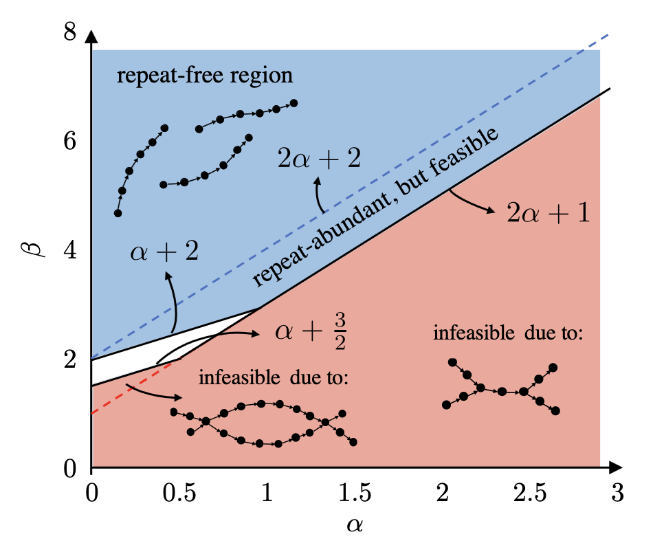

research
De novo immunoglobulin gene estimation using de Bruijn graphs

One method for determining the immunoglobulin genes that are present in an individual is to sequence the cDNA that encodes the antibodies from B cells, called antibody repertoire sequencing or Rep-Seq, and infer the IG genes from those reads. In this way, reconstructing different types of IG genes, such as the V, D, and J genes that occur in the IGH locus, from Rep-Seq data is a type of trace reconstruction problem, with errors introduced not only through mutations and indels from VDJ recombination but from sequencing itself as well. De novo reconstruction of D genes is particularly difficult, since they are significantly shorter than other IGH genes and contain a relatively high number of mutations after recombination. I seek to develop a method for k-mer-based D gene discovery using de Bruijn graphs of varying order and to characterize the feasibility of such a method in a setting that is applicable to immunogenomics.
Multiple sequence reconstruction from k-mers with repeats
K-mer based methods appear often in DNA assembly and sequence reconstruction problems. When k is shorter than the sequence read length, the set of k-mers will naturally be larger than the set of reads, allowing greater indel correction precision at the expense of potential repeats. The feasibility of a multiple sequence construction problem (whether a set of reads can be exactly or approximately recovered from the set of its k-mers) is of interest for sets of substrings that do contain repeats.